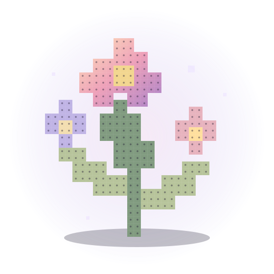

生成更准
真实色号 · 细节保护 · 色块整理 · 边缘净化

让灵感，有形可拼。快速开始
完整工作流
专业能力
真实色号 · 细节保护 · 色块整理 · 边缘净化
改色 · 替换 · 智能修复 · 参考底图 · 对称绘制 · 自动描边 · 明暗工具
色号统计 · 颗数统计 · 104×104 分板 · 超高清施工图 · 邻板提示
PNG · PDF · Pixler · ZIP · 作品海报
LIBMS Studio V3
参考 PixelBeads：拉动宽度会自动重算预览。
数值越高，越会把相近颜色合并成同一色号。
透明或四角同色的连通背景会留空，并保护主体里的白色。
MARD 使用 2026 修订版 291 色 HEX 色表。
专业色卡引擎：Lab / CIEDE2000 / 候选色修正 / 缓存；异常时自动回退旧算法。
自动：根据画布与图像复杂度推荐；限制颜色时只在当前实体色卡内合并。
Generated Patterns
每次生成或修改保存后，图纸会自动出现在这里，方便回看和挑选。
生成第一张拼豆图纸后，会自动展示在这里。